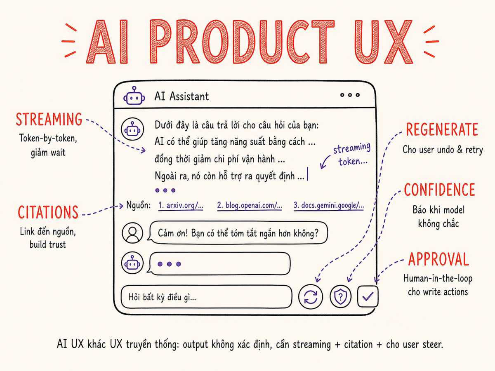

Designing AI Products (UX)
AI UX không phải là UX thông thường — probabilistic outputs, latency biến động, và hallucination risk đòi hỏi những pattern thiết kế hoàn toàn khác.

16.1 AI UX khác UX truyền thống như thế nào
UX truyền thống được xây dựng trên một giả định nền tảng: cùng input → cùng output. Button click → action. Form submit → validation. Search query → defined result set. Người dùng học pattern, hệ thống consistent.
AI phá vỡ giả định đó theo ba cách:
Probabilistic outputs
Cùng một câu hỏi hỏi hai lần có thể ra hai câu trả lời khác nhau. "Tôi có thể cải thiện email này không?" → lần 1 ra bản chỉnh sửa nhẹ, lần 2 ra bản viết lại hoàn toàn. User không biết trước sẽ nhận được gì.
Variable latency
Một câu trả lời ngắn có thể ra sau 1 giây. Một bài phân tích dài có thể mất 30 giây. Latency phụ thuộc vào response length, server load, model complexity — không predictable như database query.
Hallucination risk
Model có thể trả lời tự tin về thông tin sai. Khác với bug trong code (fail explicitly), AI fail silently — output có vẻ hợp lý. UX phải giúp user nhận ra và verify thay vì tin mù quáng.
Capability ambiguity
User thường không biết AI làm được gì và không làm được gì. "Có thể hỏi về tương lai không?", "Có thể đọc file này không?". UX phải set expectations rõ ràng.
AI không phải là tool với defined behavior — AI là collaborator với probabilistic behavior. UX phải thiết kế cho dialogue và iteration, không phải cho single-shot deterministic action.
Khi AI chuyển từ copilot (chờ lệnh) sang agent (tự hành), chat box thuần túy không đủ. Agent cần: status panel (đang làm gì), intervention points (dừng/sửa hướng giữa chừng), và activity log (đã làm gì). Copilot → agent là shift từ "request/response" sang "goal + oversight". Thiếu các surface này, user mất kiểm soát và mất tin tưởng.
16.2 Core UX patterns
Streaming (token-by-token)
Streaming là pattern quan trọng nhất trong AI UX. Thay vì chờ response hoàn chỉnh (5-30 giây), hiển thị từng token ngay khi model generate — perceived latency giảm mạnh dù actual latency như nhau.
Streaming cũng cho phép user can thiệp sớm — nhìn vào 2 giây đầu thấy model đang đi sai hướng, dừng lại và reformulate, thay vì chờ 15 giây rồi mới biết sai.
Với agentic workflows, streaming không chỉ áp dụng cho text — mà còn cho tool call steps: hiển thị từng bước agent đang thực hiện ("Đang tìm kiếm tài liệu…", "Đang phân tích kết quả…", "Chuẩn bị gửi email…") cho phép user thấy tiến trình và interrupt trước khi action nguy hiểm được thực thi. Đây là sự khác biệt giữa agent "black box" và agent "transparent".
Citations (link to source)
Citations là trust mechanism quan trọng nhất cho RAG systems. Khi model đưa ra thông tin, kèm theo reference đến chunk/document nguồn. User có thể:
- Verify thông tin trực tiếp từ nguồn
- Đọc thêm ngữ cảnh xung quanh
- Nhận ra khi model "hallucinate" (claim citation cho source không hỗ trợ claim đó)
Confidence indicators
Không phải mọi output đều có cùng độ tin cậy. Confidence indicators giúp user calibrate trust:
- Source quality signal: "Based on 3 official documents" vs "I don't have specific information about this"
- Hedging language: model tự nói "This may not be accurate for your specific version"
- Visual confidence badge: High confidence khi có nhiều supporting sources, Uncertain khi suy luận từ ít source
16.3 Artifacts, Canvas & Generative UI — vượt qua chat box
Một trong những tiến hóa quan trọng nhất của AI UX năm 2024–2025 là sự xuất hiện của side-panel artifacts và canvas — không gian làm việc tách biệt khỏi chat stream, nơi AI output có thể được render, chạy, và chỉnh sửa trực tiếp.
Claude Artifacts & Generative UI
Artifacts là cơ chế hiển thị nội dung dạng side panel — code, markdown, SVG, HTML. Generative UI là tập con của Artifacts: HTML/JavaScript thực sự chạy được, user có thể tương tác trực tiếp với app được tạo ra ngay trong conversation. Triết lý: execution environment — tạo và chạy ngay.
ChatGPT Canvas
Canvas là editing environment — thiết kế cho việc tinh chỉnh và cộng tác. AI và user cùng chỉnh sửa document/code trong một không gian chung. Canvas không render/run code; user thấy code, không phải app đang chạy. Triết lý: pair programmer inside your editor.
Generative UI builders (V0, Bolt, Lovable)
V0 (Vercel) generate production-grade React/Tailwind components từ text prompt. Bolt tập trung full-stack với browser-based editor. Lovable kết hợp visual editing + code, đạt $20M ARR trong 2 tháng (2025). Tất cả đều là prototyping accelerators — production thực sự vẫn cần developer cho 20–30% cuối.
Khi nào dùng pattern nào
Artifacts/Generative UI: khi user cần xem kết quả chạy ngay (dashboard, form, chart). Canvas: khi user cần cộng tác chỉnh sửa document dài. Chat-only: Q&A, brainstorm, tasks không cần output phức tạp. Chat-only cho mọi use case là anti-pattern.
Xu hướng mới nhất: thay vì thiết kế từng màn hình, AI nhận design system làm input và generate màn hình cụ thể on-demand từ hệ thống đó. Màn hình là ephemeral output; design system mới là artifact bền vững. Đây là shift căn bản so với canvas-based tools truyền thống.
16.4 Undo / Regenerate / Edit — let user steer
Vì AI output là probabilistic, user cần control để steer về hướng mong muốn. Ba cơ chế cốt lõi:
Regenerate
"Try again" với cùng prompt. Hữu ích khi output không tốt về style, tone, hoặc approach — nhưng không biết cách sửa prompt. Nhiều apps cho phép regenerate với higher temperature để có diversity hơn.
Edit và refine
Cho user chỉnh sửa output trực tiếp — không cần "rephrase your request". Cursor làm tốt điều này: inline diff view, user accept/reject từng change, có thể viết thêm comment cho từng diff.
Branch history
Claude, ChatGPT cho phép chỉnh sửa message và tạo parallel conversation branches. User có thể thử nhiều cách hỏi, compare outcomes, rồi tiếp tục từ nhánh tốt nhất. Đây là pattern quan trọng cho "exploration" use cases.
Agentic undo stacks (2025)
Với agentic systems thực hiện nhiều bước, "undo" phức tạp hơn nhiều — không thể chỉ "Ctrl+Z" toàn bộ. Best practices 2025:
- Atomic steps: mỗi action của agent là một unit độc lập, có thể rollback riêng (idempotent tools)
- Checkpointing: lưu snapshot state trước mỗi write action quan trọng, cho phép "rewind to checkpoint"
- Agent undo stack: UI hiển thị danh sách actions đã thực hiện, user có thể undo từng bước hoặc từ một điểm cụ thể trở đi
- "You can't always reverse what happened, but you can always see what happened": audit log đầy đủ là safety net tối thiểu khi rollback không khả thi
Không phải mọi action đều nên một-click. Với write actions (send email, create PR, delete data), thêm confirmation step có giá trị — AI có thể misinterpret intent. Rule: friction proportional to reversibility.
16.5 Human-in-the-loop & approval flows
Khi AI thực hiện write actions — gửi email, tạo ticket, thực thi code, gọi API bên thứ ba — cần approval flow. "Read before act" là nguyên tắc cốt lõi của agentic systems.
Levels of autonomy
Không phải mọi action đều cần manual approval. Design theo spectrum:
- Full auto: low-risk, easily reversible (e.g., format text, create draft)
- Auto with notification: medium-risk, reversible (e.g., create calendar event)
- Approval required: high-risk, hard to reverse (e.g., send email, make payment, deploy code)
- Human executes: AI shows instructions, human does manually (e.g., production database change)
Autonomy dial — pattern 2025
Thay vì hardcode mức autonomy, nhiều sản phẩm agentic 2025 cung cấp autonomy dial/slider — user chọn mức kiểm soát mong muốn. Framework pre-action / in-action / post-action từ Smashing Magazine (2026):
- Pre-action: Intent Preview (agent hiện kế hoạch trước khi làm) + Autonomy Dial (user set mức tự hành)
- In-action: Explainable Rationale (tại sao agent đang làm vậy) + Confidence Signal (agent tự báo mức chắc chắn)
- Post-action: Action Audit & Undo (xem và rollback) + Escalation Pathway (agent tự escalate khi gặp edge case)
Một copilot đột ngột hành xử như agent (tự làm mà không hỏi) cảm giác intrusive. Một agent liên tục xin xác nhận từng bước cảm giác underpowered. Autonomy dial giúp user tự chọn điểm cân bằng phù hợp với ngữ cảnh và mức tin tưởng hiện tại.
16.6 Trust signals
Trust phải được build qua transparency, không qua assertion. "Trust me, I'm an AI" không đủ. Các trust signals hiệu quả:
| Trust signal | Cách implement | Ví dụ |
|---|---|---|
| Show sources | Citation chips linked to original document | Perplexity citation footnotes |
| Show reasoning | Expandable thinking/reasoning trace | Claude Extended Thinking panel |
| Show limitations | Knowledge cutoff, domain constraints explicit | "My training data ends Jan 2024" |
| Acknowledge uncertainty | Hedging language khi model uncertain | "I'm not certain, but..." |
| Explain what changed | Diff view cho edit operations | Cursor diff, Notion AI revision marks |
| Audit trail | Log all AI actions với timestamp | Automation activity feed |
16.7 Latency budget design
Latency trong AI apps là multi-dimensional. Cần phân biệt và budget riêng:
- Time to first token (TTFT): từ lúc gửi đến lúc token đầu tiên xuất hiện. Target: < 1s cho interactive, < 3s cho complex. Dominate bởi: prefill time, queue wait.
- Time to last token (TTLT): total response time. Dominate bởi: generation length, decode speed.
- Perceived latency: với streaming, bằng TTFT nếu có visual feedback ngay. Quan trọng hơn TTLT cho UX.
Techniques giảm perceived latency
- Optimistic UI: show skeleton/placeholder ngay khi user submits, stream vào đó
- Streaming everything: kể cả tool calls, reasoning steps — keep user informed
- Pre-generation: với predictable next steps (chat interface), start generating likely follow-ups trước khi user hỏi
- Progress indicators contextual: "Searching 3 documents...", "Analyzing data..." thay vì generic spinner
- Interrupt capability: cho user dừng generation nếu đã đủ
16.8 Graceful degradation
AI services fail — model API down, rate limit hit, context too long, inference timeout. UX phải handle gracefully:
| Failure mode | Degraded behavior | Example |
|---|---|---|
| Model API down | Fall back to simpler model, hoặc cached response, hoặc "AI features unavailable" với manual workflow | Copilot falls back to basic autocomplete |
| Rate limit | Queue request, show estimated wait time, không fail silently | "High demand — your request is queued (est. 45s)" |
| Context too long | Auto-summarize older context, warn user, offer to start new context | "Chat history too long — summarized earlier messages" |
| Low confidence retrieval | Surface warning, offer alternative phrasing, or skip AI và show search results | "I couldn't find relevant information — here are search results instead" |
| Timeout | Partial result + "Continue" option, or retry with shorter timeout + simpler model | Partial streaming result saved, user can resume |
AI là enhancement, bukan replacement. Khi AI unavailable, core functionality (tìm kiếm, xem tài liệu, tạo item thủ công) phải vẫn hoạt động hoàn toàn. Đừng bao giờ gate critical workflows behind AI-only path.
16.9 Error UX
AI error messages tệ nhất là "Something went wrong" hoặc "I don't know". Tốt hơn là transparent failure + actionable alternative.
"I don't know."
Không giải thích tại sao. Không cho user biết làm gì tiếp. Không có alternative.
"An error occurred. Please try again."
Không có context. User không biết: retry hay không? Đổi cách hỏi không? Tìm ở đâu?
"I cannot help with that."
Từ chối mà không giải thích lý do hay cung cấp alternative path.
"I don't have information about [specific topic] in the documents you've shared. You might find this in [suggested source] or try rephrasing as [example]."
Explicit về what's missing, suggests alternative path.
"I couldn't reach the document server. Your question was saved — [Retry] or [Browse manually]."
Clear about failure reason. Preserves user's work. Offers alternatives.
"This type of analysis isn't supported yet, but here's what I can do: [list of available actions]."
Set expectations. Offers alternative actions within capability.
16.10 Onboarding
First-time user experience với AI products là critical — user đang học không chỉ UI mà còn một paradigm mới. Sai ở đây → user không return.
Set expectations early
Ngay màn hình đầu tiên, communicate rõ:
- Phạm vi: "Tôi có thể trả lời câu hỏi về [domain], dựa trên [data source]"
- Giới hạn: "Tôi không biết về [out-of-scope], knowledge cutoff là [date]"
- Cách dùng tốt nhất: "Câu hỏi cụ thể cho kết quả tốt hơn câu hỏi chung chung"
Starter templates
Blank text box là intimidating. Cung cấp suggested prompts theo use case:
- "What are the key risks in Q3 report?"
- "Summarize the meeting notes from last week"
- "Compare pricing of product A vs product B"
Progressive disclosure
Bắt đầu với simple chat. Reveal advanced features (citation mode, agent capabilities, settings) sau khi user quen với basics. Đừng overwhelm với features ngay lần đầu.
16.11 Ví dụ thực tế — những gì họ làm tốt
| Product | UX pattern nổi bật | Bài học |
|---|---|---|
| ChatGPT | Branch conversation history, custom GPTs cho context, voice mode seamless | Branch history là killer feature cho exploration — cần cho mọi AI chat |
| Claude (claude.ai) | Extended thinking visible, Artifacts side panel, Generative UI (HTML/JS chạy trực tiếp), Projects persistent context | Generative UI = execution env: user tương tác với app ngay trong chat. Show reasoning tăng trust; artifact panel tách riêng "working document" khỏi chat |
| Cursor | Inline diff với Accept/Reject per change, @file context, Composer cho multi-file | Granular accept/reject tốt hơn all-or-nothing; explicit context control quan trọng |
| Perplexity | Every answer có citations với snippet preview, source list có thể filter, Pro search transparent về search steps | Citations không chỉ link — cần snippet preview để user không phải click mỗi link |
| Notion AI | AI tích hợp ngay trong text editor, "/" command, "Improve writing" context-aware, revision marks | AI native trong editing context tốt hơn chat sidebar riêng cho writing tasks |
| GitHub Copilot | Ghost text completion, Tab to accept một token / toàn bộ suggestion, multi-line context | Partial acceptance (Tab từng từ) reduce friction; ghost text không interrupt flow |
| V0 / Bolt / Lovable | Generate UI từ text prompt; Lovable: visual edit + code + deploy; V0: React/Tailwind components; Bolt: full-stack browser IDE | Generative UI builders = prototyping accelerators. Lovable $20M ARR trong 2 tháng (2025). Production cuối vẫn cần dev cho ~20–30% remaining complexity. |
| ChatGPT Canvas | Editing environment tích hợp trong chat: AI + user cùng chỉnh sửa document/code; comment và annotation trực tiếp trên nội dung | Canvas = collaboration UX; khác Artifacts ở chỗ không render/run code — phù hợp cho writing và code review hơn là app prototyping |
Tóm tắt
- AI UX ≠ traditional UX: probabilistic outputs, variable latency, hallucination risk đòi hỏi pattern thiết kế khác — dialogue và iteration thay vì single-shot deterministic.
- Chat-as-only-UI là anti-pattern cho agents: agent cần status panel, intervention points, và activity log — không chỉ chat box.
- Streaming là pattern quan trọng nhất: giảm perceived latency từ 15s xuống 1-3s (TTFT), cho phép user can thiệp sớm. Với agents, stream cả tool-call steps.
- Artifacts / Canvas / Generative UI: vượt ra ngoài chat — execution env (Claude Artifacts), editing env (ChatGPT Canvas), hoặc generative UI builders (V0, Bolt, Lovable). Chọn pattern phù hợp use case.
- Citations + confidence indicators xây dựng trust — không phải assertion mà là transparency.
- Agentic undo: atomic steps + checkpointing + undo stack. Khi rollback không khả thi, audit log đầy đủ là safety net tối thiểu.
- Autonomy dial: user chọn mức kiểm soát. Pre-action preview → in-action rationale → post-action audit/undo. Copilot vs agent là spectrum, không phải binary.
- Error UX: transparent failure + actionable alternative, không bao giờ chỉ nói "I don't know".
- Graceful degradation: AI là enhancement — core functionality phải hoạt động khi AI unavailable.
- Onboarding: set expectations, provide templates, progressive disclosure. First session quyết định retention.